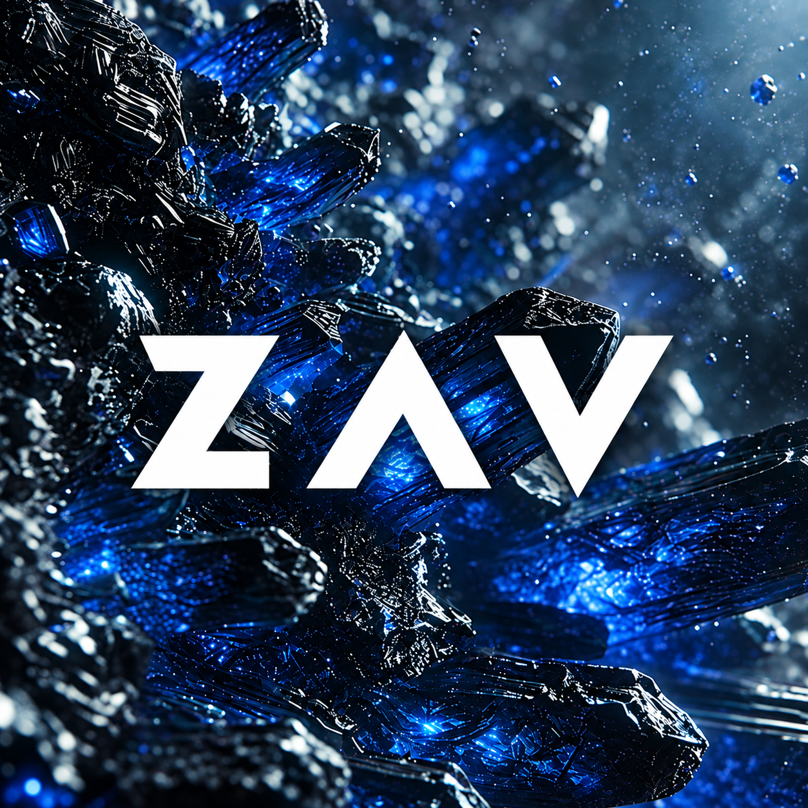
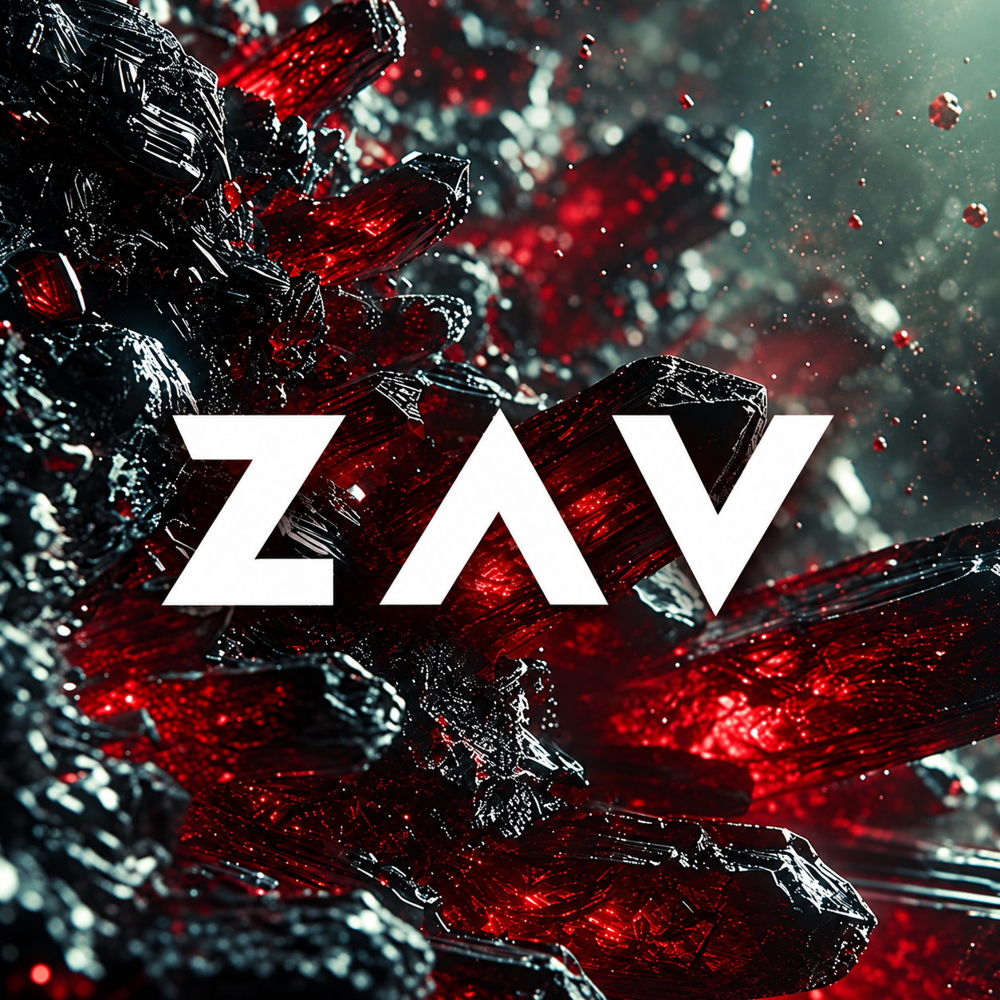

Player
Standalone + VST3
Deine Libraries spielen. In deiner DAW oder direkt auf deinem Rechner.
Release wird vorbereitet
Hier bekommt ihr den ZINAVIS Player und den Creator. Mit dem Creator könnt ihr selbst Libraries erstellen; mit dem Player spielt ihr sie als eigenständige App oder als VST3 in eurer DAW.
Die Software ist noch in Entwicklung und wird laufend von mir aktualisiert. Lasst uns gemeinsam die Ecken glätten. Viel Spaß beim Testen ;)
Liebe Grüße
Timo
Der heutige Release mit Legato wird vorbereitet. Downloads werden nach den Tests freigeschaltet.

Standalone + VST3
Deine Libraries spielen. In deiner DAW oder direkt auf deinem Rechner.
Release wird vorbereitet
Libraries erstellen
Samples aufnehmen, bearbeiten und als eigene spielbare Library exportieren.
Release wird vorbereitetPlayer + Creator
Beide Programme in einem Setup. Zum Spielen, Erstellen und Teilen.
Release wird vorbereitetEin Windows-Setup kann Player, Creator oder beide installieren. Sample-Libraries werden separat heruntergeladen. Beim Datei-Download zeigt dein Browser den Fortschritt.
Die Sample-Cloud ist schon erreichbar. Dort liegen derzeit Rohsamples für Banjo, Crystal Death, Piano, Strings und Percussion.
Sample-Cloud öffnenFür den Player brauchst du eine exportierte .zlibrary mit library.json und Samples. Die fertigen Pakete folgen mit der Freigabe.
Ein Bug oder eine Idee? Beschreib kurz, was du gemacht hast und was passieren sollte.
Meldungen gehen über GitHub an das Projekt. Ein GitHub-Konto ist nötig; Meldungen sind öffentlich. Keine privaten Daten oder Sample-Dateien anhängen.
Bis „Send to developer“ verfügbar ist: im Creator über „Export Project“ ein ZIP erstellen und den Austausch mit Timo abstimmen. Noch kein automatischer Upload.